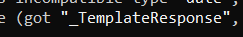
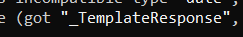

לא מצליח להגיע למה הטייפ אנוטיישן שמחזירה הפונקציה הבסיסית שלנו
{kind=link}
ניסיתי להשתמש בmypy כדי להבין - הוא טוען שחזור _TemplateResponse
אבל שאני מכניס את מה שהוא אומר שהוא מצפה - הוא אומר שהוא לא מכיר את זה.


לא מצליח להגיע למה הטייפ אנוטיישן שמחזירה הפונקציה הבסיסית שלנו
ניסיתי להשתמש בmypy כדי להבין - הוא טוען שחזור _TemplateResponse
אבל שאני מכניס את מה שהוא אומר שהוא מצפה - הוא אומר שהוא לא מכיר את זה.

אפשר בבקשה לראות את כל השגיאה של mypy?
האם אתה מייבא את _TemplateResponse?
זה גם לא עוזר?
from fastapi.responses import RedirectResponse
אבל זה לא פעולה של רידיירקט בגדול לא ?
[‘Any’, ‘FileResponse’, ‘HTMLResponse’, ‘JSONResponse’, ‘ORJSONResponse’, ‘PlainTextResponse’, ‘RedirectResponse’, ‘Response’, ‘StreamingResponse’, ‘UJSONResponse’, ‘builtins’, ‘cached’, ‘doc’, ‘file’, ‘loader’, ‘name’, ‘package’, ‘spec’, ‘orjson’]
אחד מאלה אמור לעבוד לדעתי 
from fastapi import responses
print(dir(responses))
אולי רק Response . ? בגדול ממה שראיתי בדוקומנטציה
אז ה response הזה הוא המחלקה האם של כל השאר. אבל אנסה מה יש להפסיד 
יכול להיות. מעניין למה בשגיאה כתוב expected RedirectResponse
הוא רושם את זה כי אני שמתי שהוא אמור לקבל RedirectResponse בתור נסיון להבין איך הוא מתייחס לזה.
בגדול שמתי עכשיו את האובייקט Response והוא מאשר
{kind=link}
{kind=link}
{kind=link}